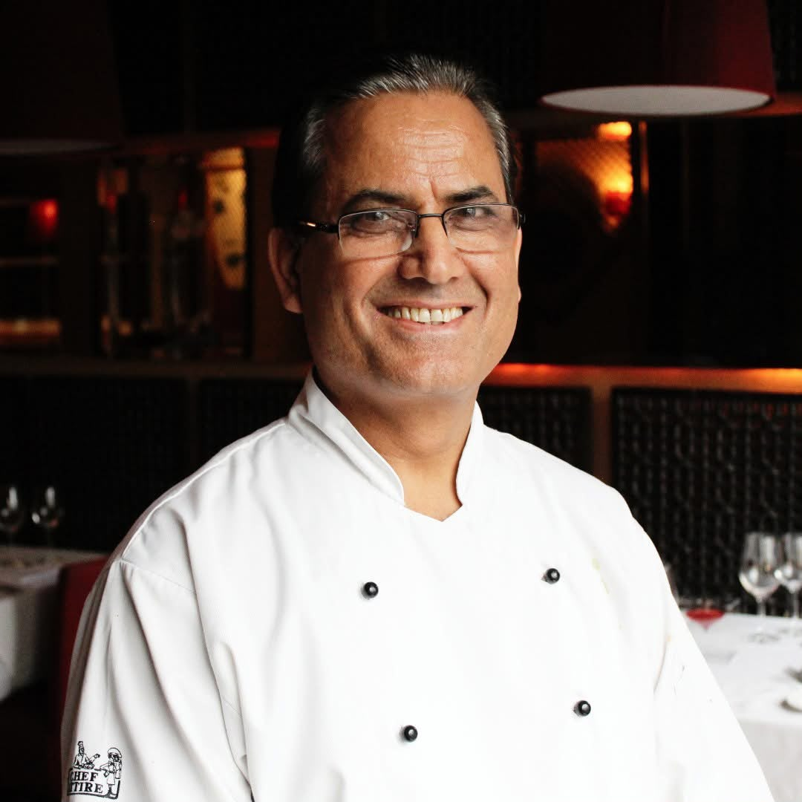

About
The Story Behind The Chef
A career shaped by passion, experience and a dedication to exceptional food.

Meet The Chef
Mahipal S Rana
ABOUT THE CHEF
A Career Built on Passion, Experience & Indian Cuisine
Chef Mahipal Singh Rana is an accomplished culinary professional with decades of experience in Indian fine dining in Ireland.
Born and raised in Uttarakhand, India, he began building his culinary career in Mumbai, where he worked as a sous chef at the renowned Oberoi Hotel.
In 1998, Mahipal moved to Ireland and joined the Jaipur Group, becoming a key member of its culinary team. Over the years, he developed a reputation for strong kitchen leadership, authentic Indian flavours and creating memorable signature dishes.
He went on to lead the kitchen at Jaipur Dalkey as Executive Chef, combining traditional Indian cooking techniques with modern presentation and a consistent focus on quality.
His career has been shaped by a deep respect for Indian culinary tradition, creativity and the belief that exceptional food should bring people together.
His Approach
Tradition. Creativity. Excellence.
Tradition
Respecting the techniques, flavours and heritage that make Indian cuisine unique.
Creativity
Bringing a modern perspective to classic flavours through thoughtful presentation and technique.
Excellence
Maintaining attention to detail from the first ingredient to the finished plate.